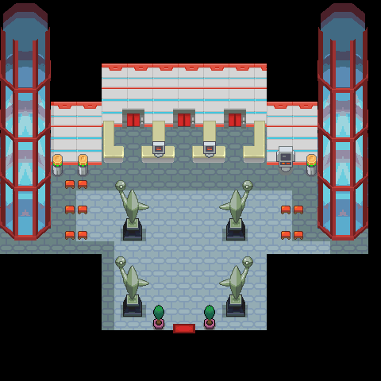

钥石
蕴藏着未知力量的石头。
获取：野生原野区(28,14) ／ 浅葱市 ／ 对战塔
用途
蕴藏着未知力量的石头。 能让携带着超级石 战斗的宝可梦进行超级进化。
标价 0 口袋：重要物品
获取方式
人物剧情
- 野生原野区（区域136） · (28,14) · 与坐标处人物交互 · 数量 1 · 地图｜静态图 · 触发条件待补
- 浅葱市（区域149） · 与坐标处人物交互 · 数量 1 · 地图｜静态图 · 触发条件待补
- 对战塔（区域220） · 与坐标处人物交互 · 数量 1 · 地图｜静态图 · 触发条件待补

数据来源
- 来源文档：out/items.json（
/353） - 表索引 index 0353；内嵌 itemId 353；口袋 KEY_ITEMS (id=2)；type 4；hold_effect 0/0；importance 1；unk19 0
- 获取来源文档：maps_research/out/scripts/scripts.json
- 获取记录 ID：
script_item_candidate:std:081BE849:1:66、script_item_candidate:std:08AC135E:49:17、script_item_candidate:std:09CE1CF0:54:13 - 说明文字解码来源：
reference/SAVE_HOME_GAME_DATA.json.charmap
地点地图
共享RGB底图；点击可缩放定位。数字对应本页相关地点，不代表地图上全部事件。
野生原野区

1 钥石（28,14） 底图有1个图块缺少原始数据。
浅葱市

1 钥石（剧情触发区，1格）；2 钥石（剧情触发区，1格）；3 钥石（剧情触发区，1格） 底图有4个图块缺少原始数据。
对战塔

地图范围记录：当前资料没有精确人物／遭遇坐标。